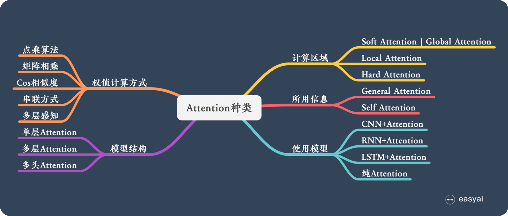
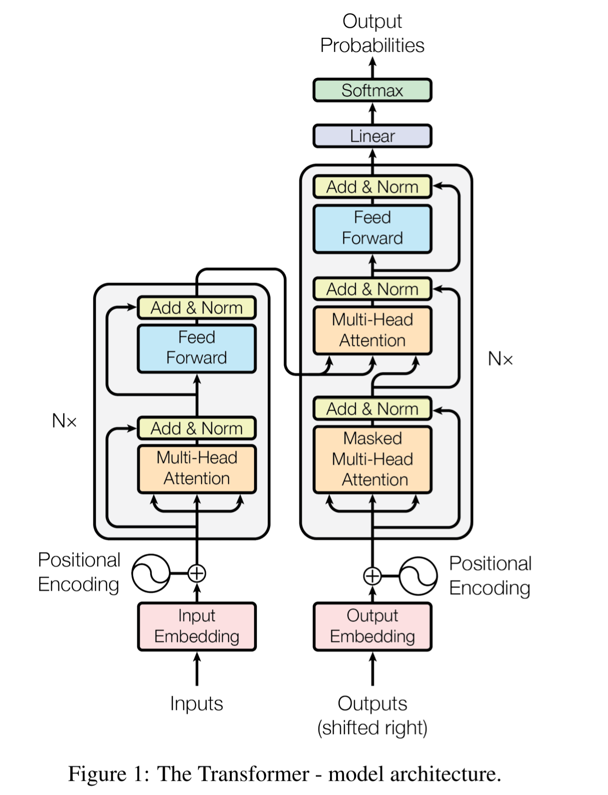
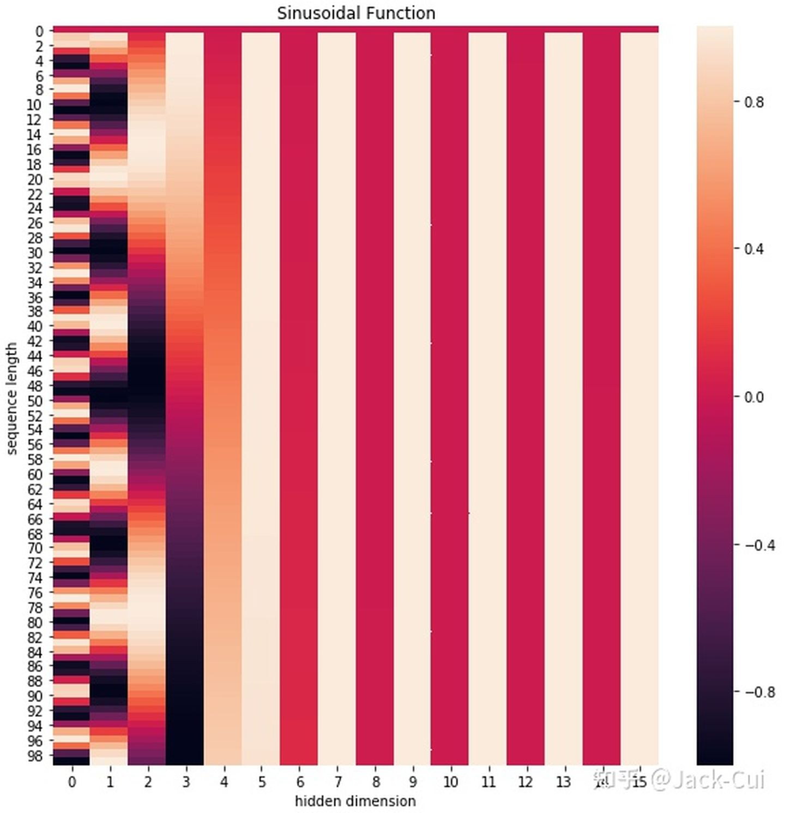
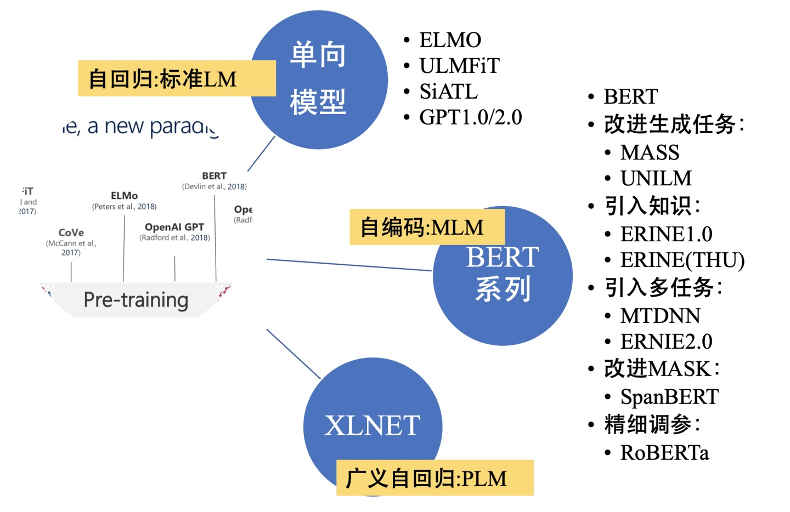

再识Attention Mechanism
本文最后更新于：1 小时前
来再次刷下Attention机制。这次准备从Attention的原理，到Transformer的构成、原理、应用、优缺点，再到Bert的基本原理，Bert的变种好好梳理一遍。
Attention Mechanism
Attention本质上就是一个内容表示向量 (vector)，表示之前的各个元素对下个元素产生的影响，这种机制可以建立其序列之间的长距离依赖关系，并且得益于并行化，Attention的速度要快于LSTM等传统的建立依赖关系的结构。
这个向量的详细产生机制可以参见笔者的这篇初探Attention Mechanism。
今天来详细学习下Attention的分支：Soft Attention、Hard Attention、Local Attention、Global Attention、Self Attention and Attention over Attention…（晕了已经😢）
这些Attention的方式按照计算区域、所用信息、结构层次等方面来分类。

计算区域
按照计算区域划分的话，可以分为
- Soft Attention
比较常见的Attention方式，对所有key求权重概率，每个key都有一个对应的权重，是一种全局的计算方式，（也可以叫Global Attention）。这种方式比较理性，参考了所有key的内容再进行加权，但是计算量可能会比较大。 - Hard Attention
这种方式则是精准定位到某个key，其余key就都不管了。相当于这个key的概率是1，其余key的概率全部是0。这种对齐方式要求很高，要求一步到位，如果没有正确对齐，会带来很大的影响。
另一方面，因为其不可导，所以一般需要用强化学习的方法进行训练。 - Local Attention
这种方式是上述两种方式的一个折中。先用Hard Attention定位到某个地方，再以这个地方为中心得到一个窗口区域，在这个窗口区域中采用Soft Attention。
所用信息
现在假设我们要对一个句子计算Attention，但是一段中还有其他的很多句子啊。那么用不用其他句子的信息来Attention就是一个很大的区别。
我们把这种其他句子称作外部信息。
如果Attention使用了外部信息，则称其为General Attention，否则则为Local Attention。
结构层次
根据结构来划分的话，可以分为：
- 单层Attention
比较普遍的做法，即一个query只对一段文本进行一次attention - 多层Attention
一般用于文本具有层次关系的模型。
假设我们把一个document划分成多个句子，在第一层，我们对每个句子使用attention计算出一个句向量，表示对句子特征的理解；
在第二层，我们再对所有句向量做一次Attention，计算出一个文档向量，表示对句子间关系的理解。最后用这个文档向量去做任务。
值得一提的是，其实第一层和第二层都是一个单层Attention，只不过组合起来加深模型的理解而已。 - 多头Attention (Multi-head Attention)
用多个query对一段文本做了多次attention，每个query关注原文的不同部分（如q1关注句法，q2关注实体间关系…）。其实就相当于重复做多次单层attention
Transformer
Transformer, 即只采用Attention而不结合CNN或是RNN的架构，在各项任务上都取得了不错的成绩。
Transformer的作者认为，RNN / CNN的计算顺序是从左到右固定的，而这样固定的顺序会带来两个坏处：
- 时间片的计算依赖于时刻的计算结果，限制了模型的并行能力。
- 由于顺序计算的过程中信息会丢失，所以对于特别长距离的依赖，LSTM仍然无能为力。
Transformer的提出解决了上述两个问题：首先它不需要等待前一时刻的状态，具有良好的并行性，符合现代的GPU架构。
其次它将任意两个单词间的依赖变为常量，不再有信息丢失的问题。
Transformer Block结构如下图：

可以看出总体上分为两个部分：Encoder（左半）和Decoder（右半）。
一个完整的可训练的网络由6个Encoder和Decoder组成。
上面那个图是论文中的图，稍微有点复杂。把他简化一下：

注意为了不重复绘图，采取了和RNN结构图一样的策略，即只画出了一个block。而实际上，在对句子进行处理时，block是像穿葫芦串一样连接起来的，并且如果在机器翻译等生成式的任务中，当前word的输出需要前一个word的hidden state。
再来说Block里面的层，每个Encoder是由一层Self-Attention和一层Feed Forward Neural Network (FFN)组成的，这样可以获得输出的Attention表示。
而每个Decoder则是由一层Self Attention，一层Encoder-Decoder Attention和一层FFN组成的。
可以理解为先用Self Attention理解Encoder后的向量，然后用Encoder-Decoder Attention进行翻译，最后用FFN输出结果。
具体的操作我们后面再细谈。
Self Attention
Self Attention是Transformer里面最为核心的内容，其思想是在一个输入的句子向量中，为每个词向量都找到一个权重，这个权重代表它和其他词向量的关联程度。
这个权重向量我们先称其为，产生方式如下：
注意到我们这里使用了Q, K, V这三个向量来计算。那么这三个向量是什么呢？
简单来说就是通过线性层生成的（万能的矩阵相乘😅），代表词向量间相关性的一些向量。
词向量的shape = [1, dimension] = [1, 512]；权值矩阵的shape = [512, 64]；Q, K, V的shape = [1, 64].
举一个在网上购物商店买东西的例子：我们输入一个查找项Query，系统根据这个Query列举出数据库中商品的Key，然后从中选出我们要的最相近的那个Value。
然后再来解释下上面产生的那个公式，我们通过和的点积计算出查询和数据库中Key的相似性，用 dimension开根号 做归一化，并且通过Softmax给出一个分数。
最终将分数和Value相乘得到Attention向量。(我个人认为Value向量反应了输入词向量的关键特征，类似LSTM中的)
插入一点内容无关的见解，现在很多网络的设计思路让我感觉怪异的一点是，不同于传统编程是人去设计一个算法、一个思路，计算机去完美地执行它；神经网络中的设计更像是我假定你 (NN) 能产生一个我需要的结果，然后我在使用这个结果的基础上去设计一套算法，并且喂数据、反向传播训练，最后发现欸嘿竟然真的work了！这种先有蛋后有鸡的设计思路一直让我很不适应…
按照这种思路来思考的话，我们设计的算法真的贴合NN吗？如果NN自己就能做到这一点，我们的算法是否画蛇添足了呢？
Don’t try to understand it. Feel it. – 《Tenet》
Feed Forward Neural Network (FFN)
FFN就是一个简单的ReLU+线性层
1 | |
- 将映射到一个更大维度的特征空间，然后使用ReLU引入非线性进行筛选，最后恢复回原始维度。
- Transformer在抛弃了 LSTM 结构后，FFN 中的 ReLU成为了一个主要的提供非线性变换的单元。
Position Encoding & Position Embedding
这篇文章关于position encoding总结的不错，值得一看。
尽管说了Transformer的这么多设计，但是本质上它依然只是个能力更强的词袋 (CBOW) 模型而已，因为其不具备捕捉序列顺序的能力。
为了解决这个问题，Transformer在编码词向量的时候加入了位置信息，这一技术称之为Position Encoding(要和Bert的Position Embedding区分开来)。
这两个的区别是一个是可以解决任意长度的位置编码 (encode)，而一个是映射到固定的区间。
Position Encoding的方式有很多，最简单是绝对坐标编码0, 1, 2...。
但是这样的方式会造成在位置向量叠加的时候对index大的元素有偏见。
Transformer采用的是sin-cos规则，使用了sin和cos的线性变换来encode位置信息。
线性变换：
可以注意到，在上面这2个公式中，奇数个index和偶数个index的编码方式分别采用cos和sin。并且为了扩充映射的区间，加入了dimension 这个参数。
越大，映射的区间就越大。
pos需要除以一个量，并且这个
可以把他理解为加入后就只在 sin / cos 的某一个频率上做映射。
直观的效果可以看下图：

总结
Transformer的优势：
- 对比LSTM (RNN)
可并行，并且在计算过程中不会出现不会出现信息丢失的问题 - 对比CNN
可以捕捉到句子依赖，具备更强的可解释性
Transformer的缺点： - 局部信息的获取不如RNN和CNN
- 位置信息encode存在问题
- 顶层梯度消失
- 具有残差连接，多次连乘时会有梯度消失问题
附两张炫酷的流程动图


基于Transformer的预训练语言模型
介于本文篇幅（懒），这里就简单介绍下BERT家族及相关的预训练语言模型的分类吧。
- 单向特征表示的自回归预训练语言模型，统称为单向模型：
ELMO/ULMFiT/SiATL/GPT1.0/GPT2.0 - 双向特征表示的自编码预训练语言模型，统称为BERT系列模型
(BERT/MASS/UNILM/ERNIE1.0/ERNIE(THU)/MTDNN/ERNIE2.0/SpanBERT/RoBERTa) - 双向特征表示的自回归预训练语言模型
XLNet

Ref
[1] Attention机制，https://easyai.tech/ai-definition/attention/
[2] A. Vaswani et al., “Attention Is All You Need,” arXiv:1706.03762 [cs], Dec. 2017, Accessed: Nov. 07, 2020. [Online]. Available: http://arxiv.org/abs/1706.03762.
[3] Youngmi huang, Attention Is All You Need：基於注意力機制的機器翻譯模型, https://cyeninesky3.medium.com/attention-is-all-you-need-基於注意力機制的機器翻譯模型-dcc12d251449
[4] 大师兄, 详解Transformer （Attention Is All You Need）, https://zhuanlan.zhihu.com/p/48508221
[5] 中二青年, transformer的Position encoding的总结, https://zhuanlan.zhihu.com/p/95079337
[6] Jack-Cui, 保姆级教程：图解Transformer, https://zhuanlan.zhihu.com/p/347904940
[7] Jay Alammar, The Illustrated Transformer, http://jalammar.github.io/illustrated-transformer/
[8] 人工智能, Transformer 优缺点分析, https://zhuanlan.zhihu.com/p/330483336
[9] JayJay, nlp中的预训练语言模型总结(单向模型、BERT系列模型、XLNet), https://zhuanlan.zhihu.com/p/76912493
本博客所有文章除特别声明外，均采用 CC BY-SA 4.0 协议 ，转载请注明出处！